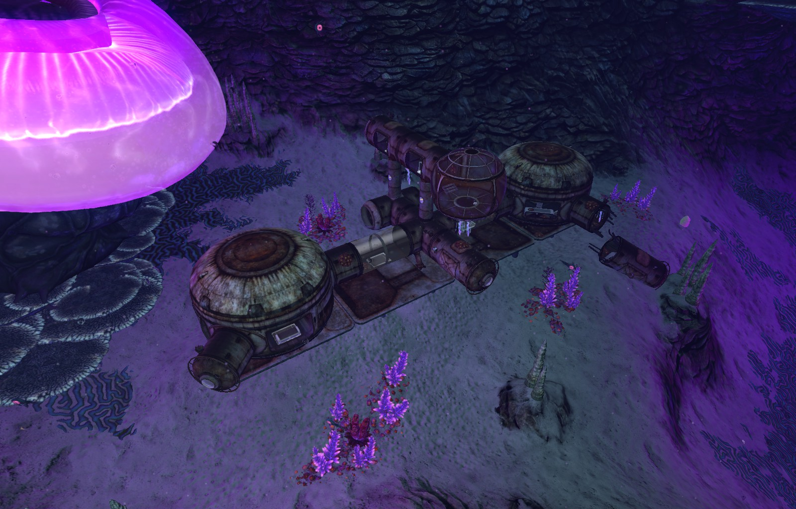

Дегазі ( Degasi ) - космічне шахтарське судно, збите системою ППО Предтеч при підльоті до планети 4546B приблизно за 10 років до подій гри. Причиною відвідування планети було власне рішення капітана з метою пошуку ресурсів . Під час аварії вдалося вижити лише трьом членам екіпажу: Полу Торгалу - капітану судна, його сину Барту Торгалу та Маргарет Мейде - найманці. З уламків судна екіпаж Дегазі, що вижив, побудували свої бази. Перша база знаходиться на Плавучих островах , друга - в Печерах медузних грибів , третя - у Глибинах великого рифу . Корабель належав корпорації «Торгал» трансдержави Монгольські Штати . Генеральним директором корпорації "Торгал" був Пол Торгал. У зв'язку з віддаленістю планети 4546B пошук, зниклих безвісти, був неможливий. Зникнення генерального директора та його пошуки стали причиною зміни курсу Аврори та подальшої її катастрофи. Більше інформації можна знайти у втрачених КПК членів екіпажу "Дегазі" .